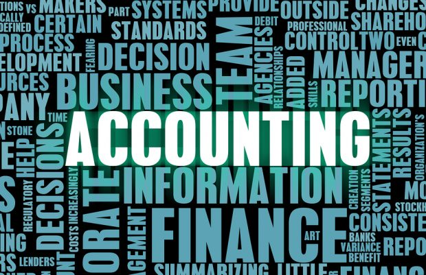
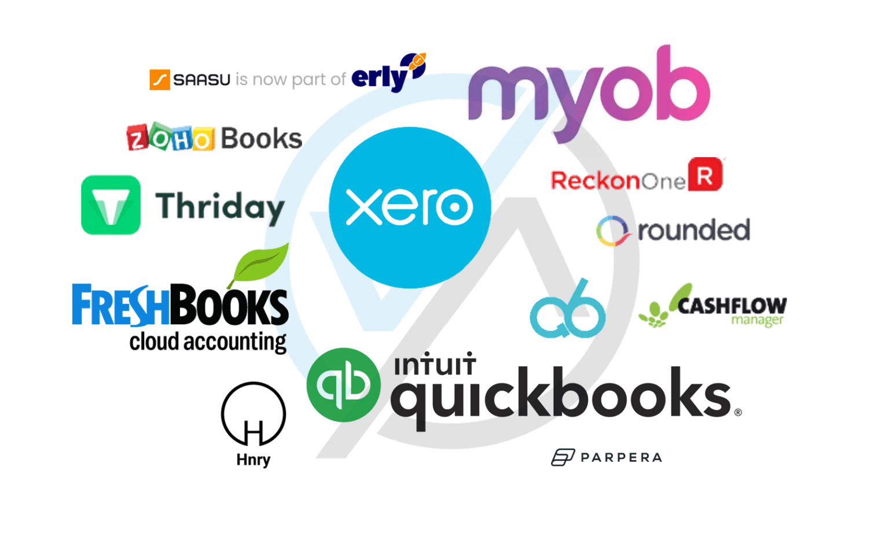
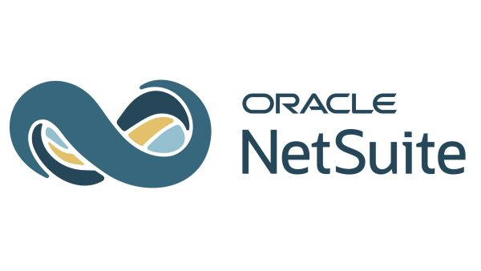

What is Accounting?
Accaounting is process of tracking, recording, and studying someone's or company's financials.

Image source(external)
What is an Accounting Software System?
An accounting software systme is a application or website used to keep trakc of someone's or company's financials as well as providing features to help summerize the financials.

Image source(external)
Popluar Accounting Software Systems
QuickBooks
Was created in 1992 and offers two different systems QuickBooks Online for online accounting and QuickBooks Desktop for accounting on a desktop.
QickBooks(external) Image source(external)NetSuite
Created in 1998 and offers integraded enterprise resource planning(ERP) and supply chain management.
NetSuite(external) Image source(external)
Sage
Was created in 1981 and is also has integraded enterprise resource planning(ERP) but has a more comprehensice financial system.
Sage(external) Image sourc(external)